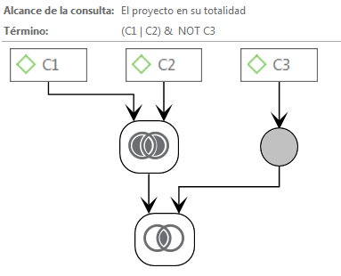
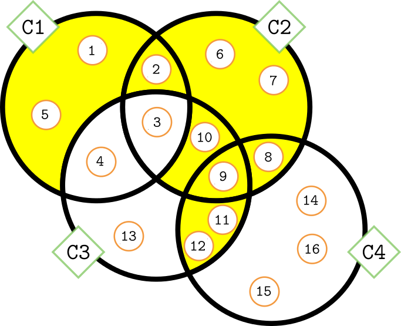

Análisis con Atlas.ti 8
Juan Muñoz
Universitat Autònoma de Barcelona
juan.munoz@uab.cat
http:/juan.psicologiasocial.eu

Crear memos-anotaciones

- Crear una memo “Objetivos”
- “Duplicar” (copiar y pegar) el memo “Pregunta de investigación”
Comparación constante


Friese (2011)
Ejercicio: Depurar códigos

- Generar Informe de todas las citas de un código.
- Generar informe de un conjunto de códigos.
- Dividir un código en dos.
- Fusionar varios códigos.
¿Qué “actores” aparecen en las secciones utilizadas para captar la atención (títulos…)?
- Escribir Memo
- Identificar secciones.
- Identificar “actores”.
- Buscar co-ocurrencias..

Co-ocurrencias

Tabla de co-coocurrencias

Agrupar

Ejercicio: grupos de códigos

- Crear grupos de códigos.
- Desde el Administrador de códigos.
- Con el Administrador de grupos de códigos.
- Activar filtro
- Rehacer Tabla de coocurrencias
Pregunta 1b
¿Cómo presentan esa información los diferentes diarios?
- Escribir Memo.
- Grupos de documentos (por diario).
- Grupos inteligentes de documentos.

Grupos “inteligentes”
| + Derechas | - Derechas | |
|---|---|---|
| Pre (15 marzo) | ||
| Post |

Pregunta 2
¿En qué contextos aparecen las víctimas?
- Autocodificar Cruz, Quer…

Autocodificación

Tipos de relaciones

Ejercicio: Relaciones entre citas

- Crear relaciones entre citas del mismo/diferente documento.
- “Navegar” entre citas.
- Explorar relaciones con el Administrador de vínculos.
Estructura: Grupos de códigos…

Estructura: Relaciones entre códigos…

Estructura: Relaciones entre códigos…

Redes

Redes

Consultas: Operadores Booleanos

Operadores Booleanos

Construcción de una consulta
Todas las citas codificadas como C1 Y C2 O como C1 y C3


https://bit.ly/2SD7368
Construcción de una consulta
Todas las citas codificadas como C1 O C2 pero NO como C3


Construcción de una consulta
Todas las citas codificadas como C1 O C2 O como C3 Y C4 Y NO como C1 Y C3


Operadores Semánticos

Operadores Semánticos

Operadores de Proximidad


Buscar texto